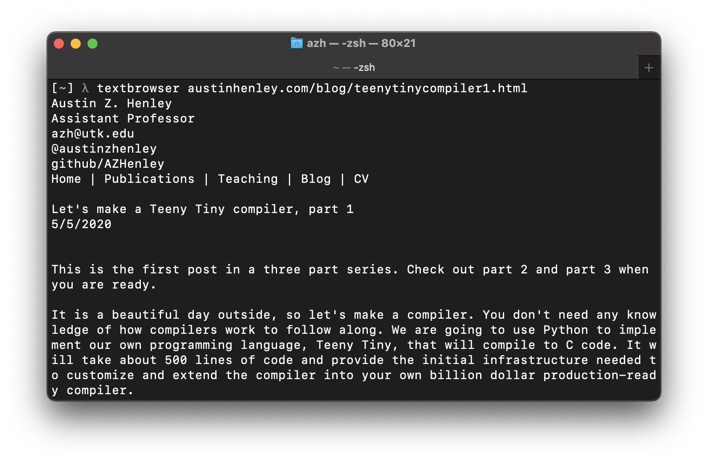
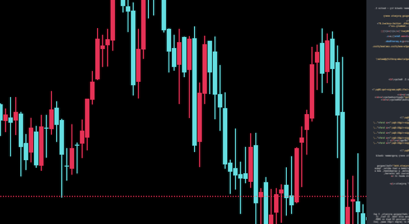

I work on AI + developer tools.
Update 12/29/2020: See the discussion of this post on Hacker News.
Check out the sequel to this post: Challenging algorithms and data structures every programmer should try.
One year ago, I posted Challenging projects every programmer should try. It included a text editor, Space Invaders, a BASIC compiler, a small operating system, a spreadsheet, and a video game console emulator. It blew up across the internet, amassing over 100,000 views in a month (read more about it going viral).
I'm now expanding the list with more "modern" projects:
Yes, 3D graphics! After the original list of challenging projects, I got a lot of comments suggesting a ray tracer. I agree with them. In fact, it was one of the first things I tried making while learning C# back in 2009. Don't worry if you don't understand all the math or jargon right away, just keep trying to make progress. There are a lot of resources about ray tracers, and you'll have motivating visuals to reward you along the way.
Ray tracers can produce some truly beautiful images, even with 300 lines of code! First, you might go down the rabbit hole of supporting all sorts of reflections, lights, and materials. Or you'll realize that a single image can take several minutes to render so you'll begin optimizing. For example, you might parallelize the ray tracer with threads, reduce the number of intersection candidates, or use a profiler to track how many objects are being allocated and find the bottlenecks (I had some bad code initially...).
Be creative! I didn't want to go the route of making yet another half-optimized ray tracer nor did I want to pursue hyper-realistic refractions. Instead, I purposely lowered the resolution so that I could make real-time animations. A gif of a spinning torus with falling particles can get you quite a few likes on Twitter. I think there is a lot of opportunity for indie games to go this route and have a unique, artsy style. Look out for my 8-bit retro-looking video game in the future!
Further reading:
A key-value store is really just a dictionary. Give it a key, get back a value. You can add new keys, remove keys, or update values. Viola, you have created a NoSQL database! But you can take it a step further and offer it as a web API, so that all your future web apps can utilize your database service.
I really like this project because it is really simple to create the basic "database". You can start by using the dictionary data structure that comes with whatever programming language you're using and slap a web API on top of it. But like all these ideas, there is a lot more that can be added: optimizations for high performance, security and multiple users, atomic transactions, data types, batch operations, persistance, failure recovery, and the ability to run it across multiple servers. Soon enough you'll have a billion dollar product like Redis or Amazon DynamoDB.
Seriously, fire up your code editor and use your favorite language to try this one. I did it with both Go and Racket to get a feel of the differences. It was quite enlightening. The performance was good enough with my Go version on small tests right out of the box.
Further reading:
My first ever interview for a software development position opened with, "What happens when you type Yelp.com into your web browser and press enter?" I didn't do well and was rejected. Thus began my journey to really know how everything works. The part I found most interesting was how a browser turns HTML and CSS into a rendered web page. (Side note: this is a popular interview question that I was just too ignorant to know about, and there is a phenomenal resource that goes into way too much detail to answer what-happens-when.)
Don't get your hopes up yet about designing some killer user interface that will squash Safari or Brave. Oh, no. You have much to do before you get to that point! Let's scope it down by saying that you are given an HTTP library and an HTML parser, but you have to implement your own renderer. You can't use a WebBrowser widget or anything like WebKit. What do you do???
My suggestion is to start by making a text-based web browser. In fact, you might as well ignore virtually all formatting. Ignore all JavaScript and CSS. The steps would be to perform an HTTP GET with a given URL, parse the HTML to find text that should be displayed, and put it on the screen. That is it.
Once you get just plain text, there is no short of features that you can pile on. You can add tabs, history, back and forward buttons, etc. But at some point you might want more than text... and I wish you luck. Rendering the visual elements of web pages beyond text is something I will probably never try :) but perhaps one day, when I find infinite time. Take it a step at a time, focusing on a single HTML tag and attribute. Let me know how it goes if you attempt this!
Further reading:
Alright, here is your opportunity to build something that theoretically could make you rich: a stock trading bot! Like all my projects ideas, it is quite simple to build a basic trading bot, but then there are endless features and improvements you can add. You don't even need to know anything about investments to get started. Along the way you will at least learn how to utilize different web APIs, process data, and apply an existing or create your own trading strategy. You can test it out on heaps of historical data or just let it play with monopoly money.
Not enough? Apply machine learning or setup a Twitch stream that lets strangers take control of your money.
Here is the route for a basic trading bot. First, identify a few big companies that interest you for your bot to trade (e.g., Apple, Tesla, and Target). Second, decide on a condition for when to buy and when to sell. For example, if the current price reaches a 52-week low, then buy. If it reaches a 52-week high, then sell. (Do not use this strategy with real money! It is dumb.) Third, figure out how to use a free API to get stock data. There are some nice libraries out there that make it easy. Fourth, setup a testing environment with monopoly money (and without a stock broker). Let it run!
Now for the endless fun... automate testing on historical data over long periods of time, implement dozens of trading algorithms and compare them, add visualizations, connect to a real stock broker using their API, try out some machine learning or evolutionary algorithms, and spam Twitter with all your successes.
Further reading:
Please share your progress as you implement these projects, and let me know of any other ideas you have!